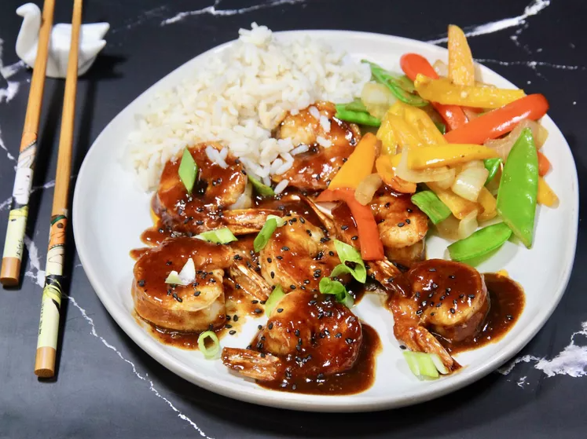

Gochujang Honey Shrimp

Description:
Shrimp with Korean Gochujang Sauce and honey.
Great for taste and iron, bad for cholesterol.
Ingredients
- 16 ounces uncooked medium shrimp, peeled and deveined
- garlic powder to taste
- salt to taste
- 3 tablespoons gochujang (Korean hot and sweet pepper paste), or to taste
- 2 tablespoons honey
- 1 tablespoon sesame oil
- 3 teaspoons soy sauce
- 1 teaspoon freshly squeezed lemon juice
- 3 cloves garlic, minced
- 1 teaspoon minced fresh ginger root
- 1 ½ tablespoons vegetable oil, or more as needed
- ½ cup water
- 1 teaspoon cornstarch
- 1 teaspoon sesame seeds
- scallions, sliced diagonally, as a garnish
Steps
- Season both sides of shrimp with garlic powder and salt, and set aside.
-
Combine gochujang, honey, sesame oil, soy sauce, lemon juice, garlic,
and ginger in a bowl until well combined. Set aside.
-
Heat oil in a non-stick skillet over medium-
high heat. Add shrimp and cook until they are bright pink on the outside and the meat is
opaque, 2 to 3 minutes, flipping half way through; do not overcook. Remove shrimp from the pan.
-
Reduce temperature to low, and add sauce to skillet. Whisk water and cornstarch together
in a small bowl to make a slurry. Stir slurry into the sauce until well combined. Keep cooking,
stirring constantly, until the sauce starts to slightly thicken, about 1 minute. Add shrimp back
into the skillet and stir until coated and just heated through.
- Garnish with sesame seeds and scallions. Serve hot.
Home